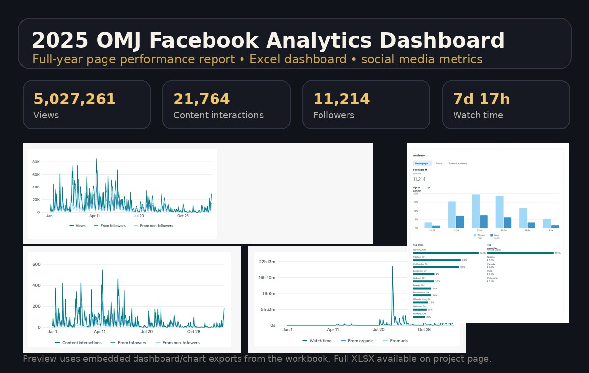

Built a full-year reporting workbook for the Pike County OMJ Facebook page, organizing Facebook-provided metrics, graphs, audience data, and top-performing content into a more navigable Excel dashboard.

Project Goal
Make a full calendar year of Facebook page analytics easier to review, navigate, and reference by organizing key numbers, embedded graphs, audience information, and top content breakdowns into a structured Excel report.